Tools
Screwdrivers, drill, enclosure-safe drill bits, wire cutters, and a wire stripper.
Hardware assembly
Source the parts, prepare the enclosure, and assemble the connected brewing scale around the M5Stack Dial, the VEVOR weighing platform, and the I2C weight reader.
The goal is a clean, robust scale that is easy to wipe down, with no exposed wiring during a brew day.
Screwdrivers, drill, enclosure-safe drill bits, wire cutters, and a wire stripper.
Flexible wire, jack connectors, PG7 cable glands, and an RJ9 cable for the platform.
Work with power disconnected. Check 12V polarity before connecting the Dial or the valve.
After assembly, use the software guide to flash the firmware and calibrate the scale.
The purchase links below preserve the affiliate links from the project README. Each card shows the
first product image extracted from its affiliate link and downloaded locally into img/.
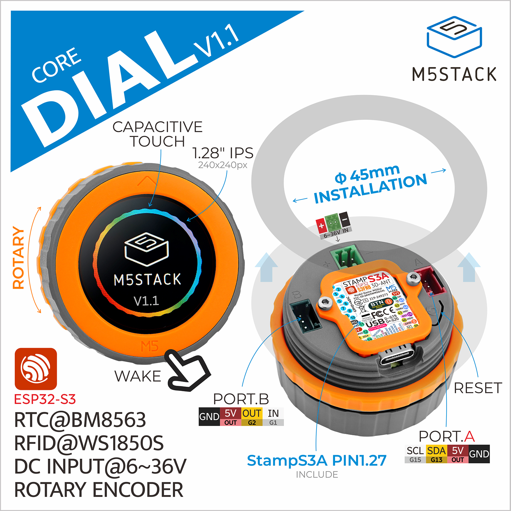
The M5Stack Dial provides the ESP32, Wi-Fi, round screen, and rotary encoder. It keeps wiring low and gives the brewer a physical interface that remains usable with wet hands.
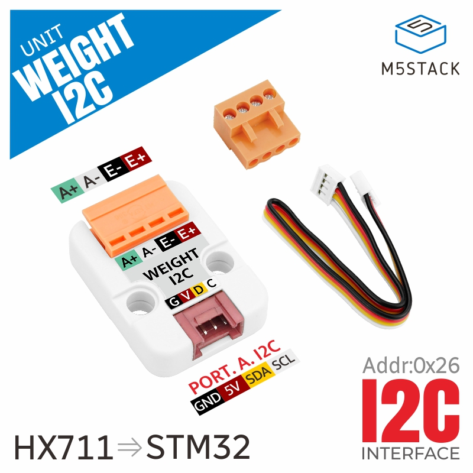
The Unit Weight I2C converts the load-cell signal into data the Dial can read. Keep the wiring short and mechanically protected inside the enclosure.
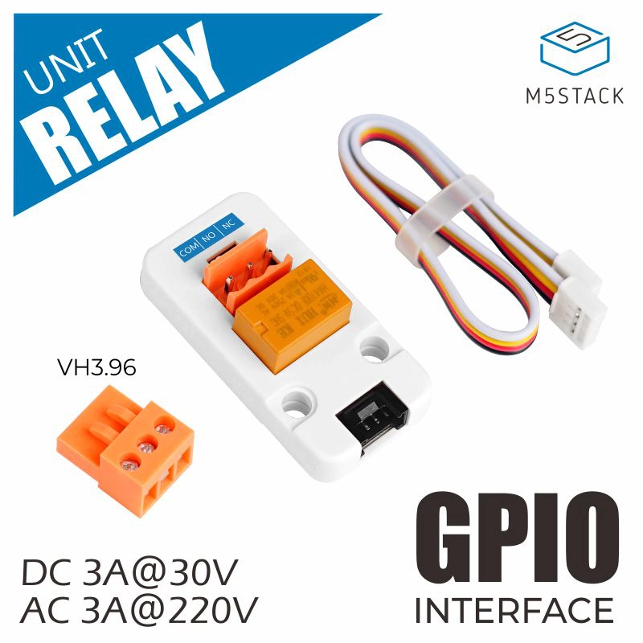
The Unit Relay switches the optional 12V solenoid valve for keg filling while keeping the control signal separate from the valve power path.
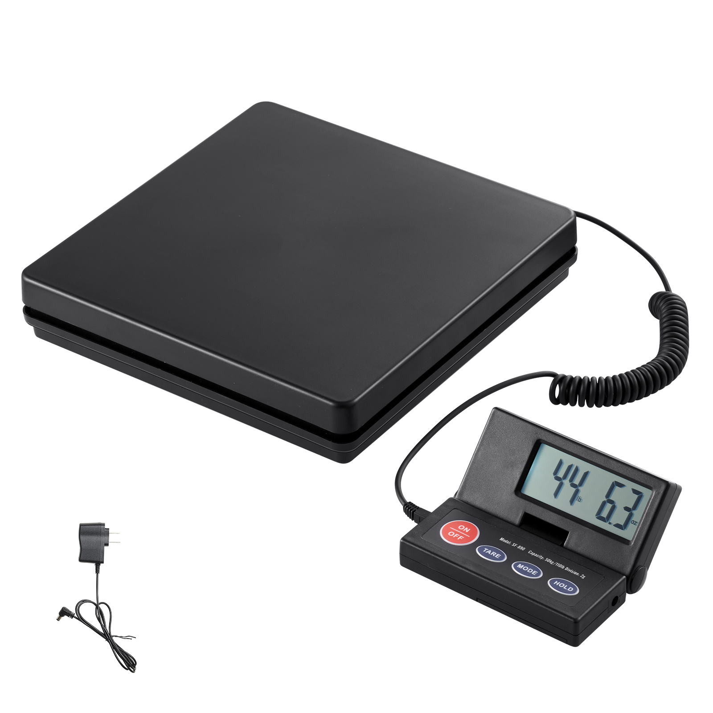
The VEVOR postal scale platform is robust, affordable, and suitable for heavy brewing vessels. Its RJ9 connector makes integration easier and keeps the platform replaceable.
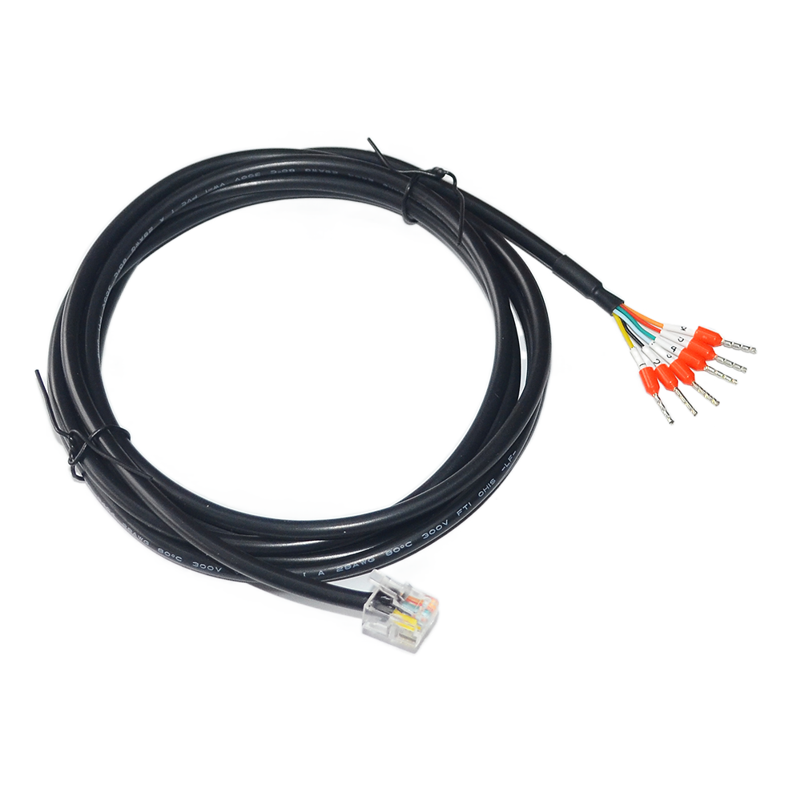
The RJ9 cable keeps the scale platform connection removable and avoids hard-wiring the load-cell cable directly into the enclosure.
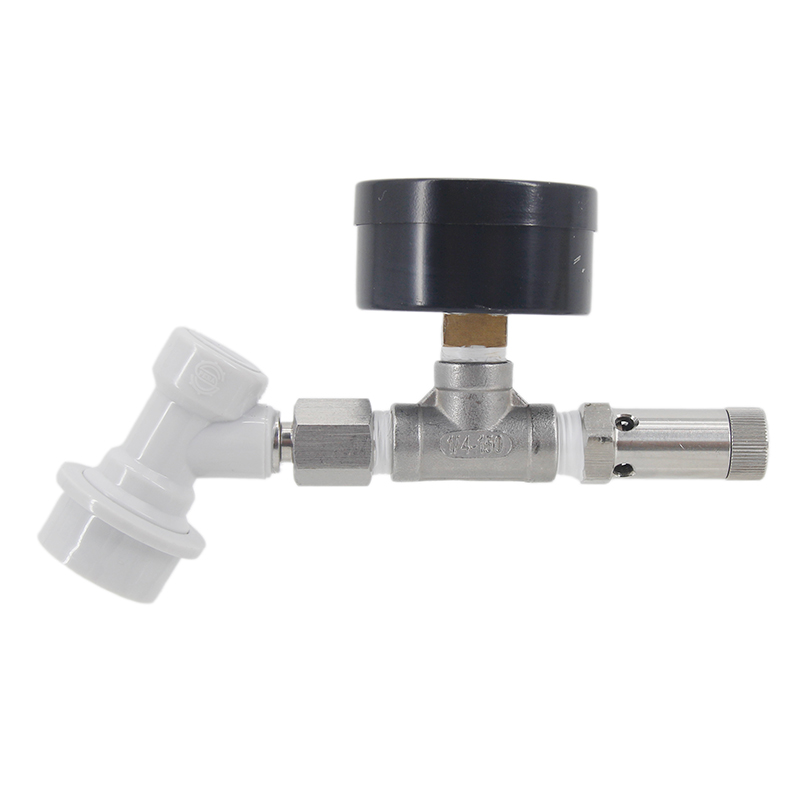
The spunding valve is only required for keg filling. It remains the mechanical pressure regulator while the scale controls the filling stop by weight.
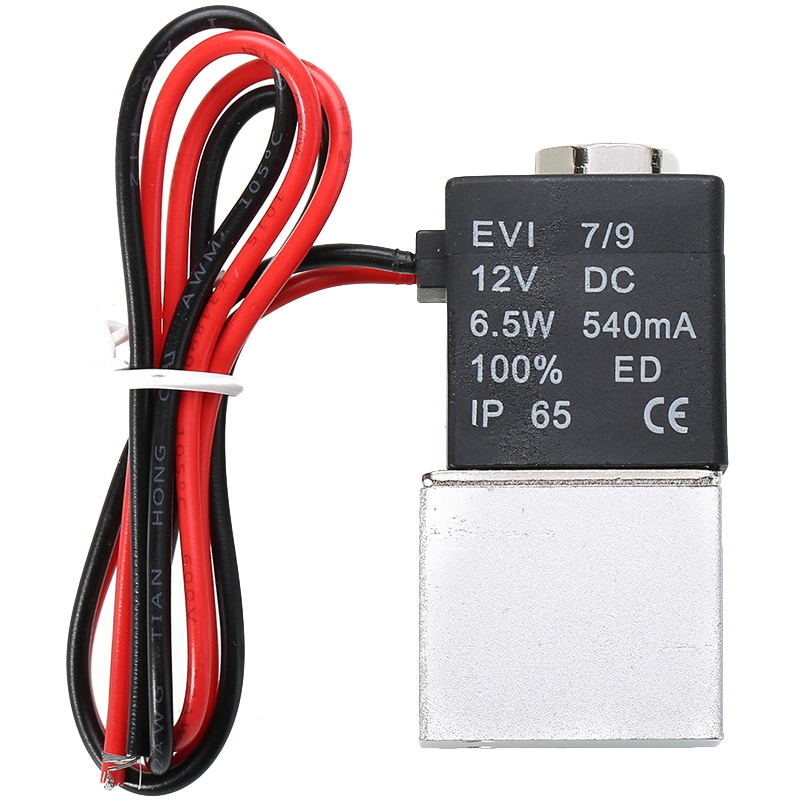
The normally closed solenoid valve gives the controller a safe way to stop filling. If power is lost, the gas path closes.
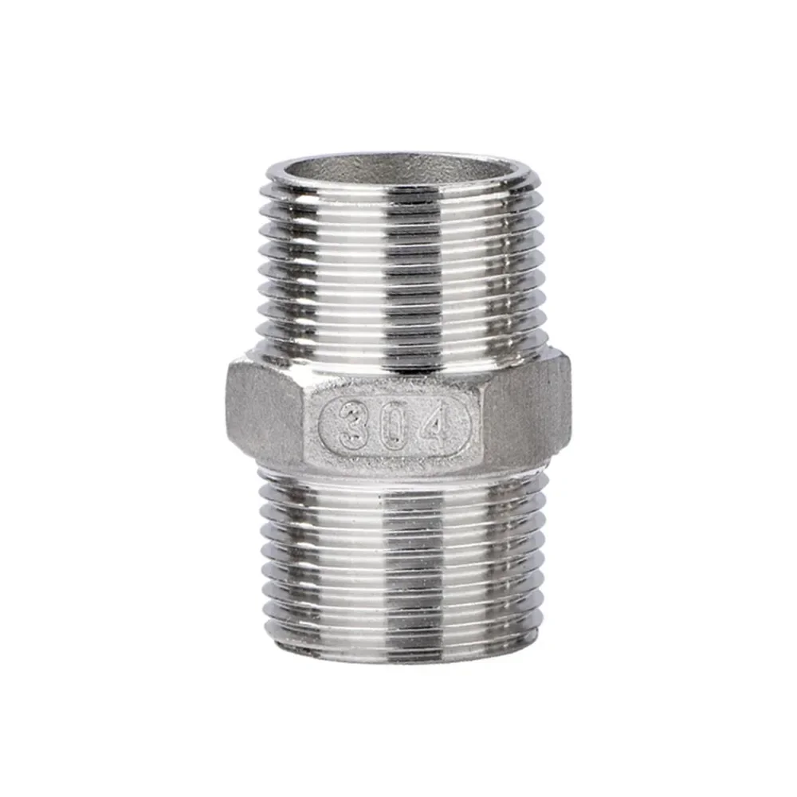
The adapter helps integrate the solenoid valve and spunding hardware into the gas-side assembly used by the keg-filler function.
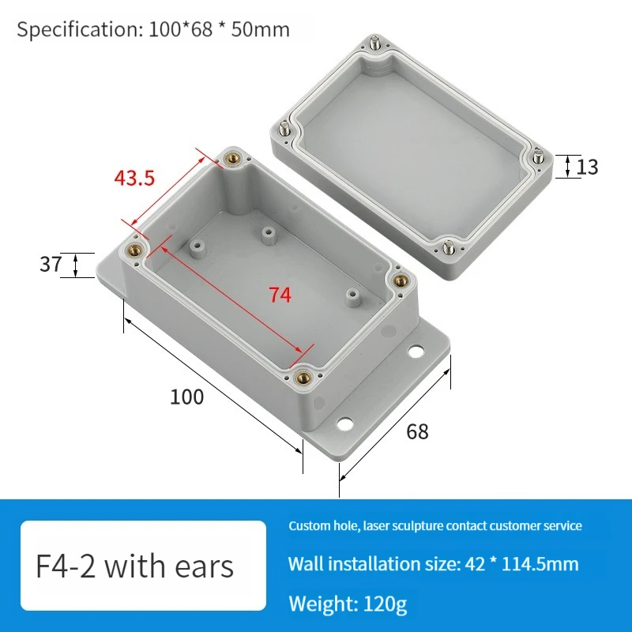
The enclosure gathers the electronics, protects the connections, and leaves only the useful external cables: scale platform, power input, and optional valve output.
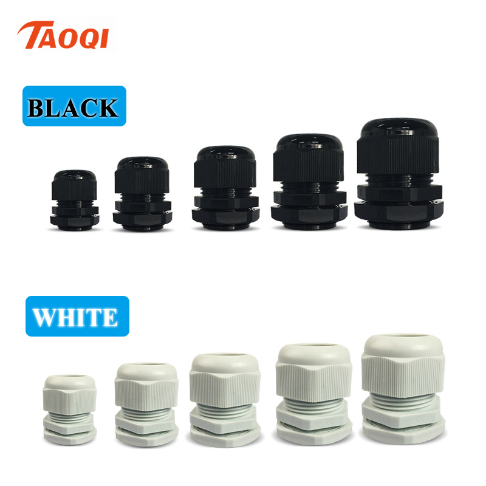
Cable glands provide strain relief and help keep splashes away from the electronics inside the enclosure.
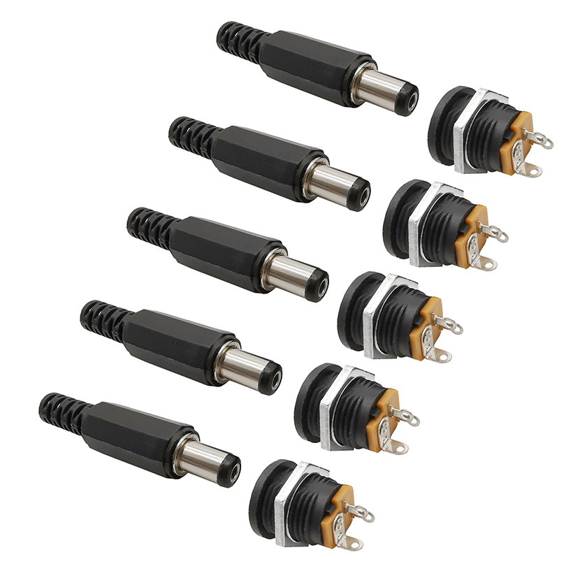
Jack connectors make power and optional valve wiring easier to disconnect for service or transport.
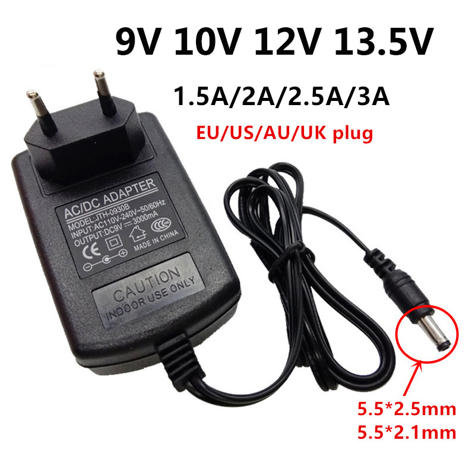
The 12V supply powers the build and shares the same voltage family as the solenoid valve used by the keg-filler option.
Build the scale path first, then add the valve-control path only if you plan to use keg filling.
Position the M5Stack Dial so the screen and rotary encoder remain accessible. Then mark the required exits: 12V power, RJ9 scale cable, and valve output if the keg filler is installed.
Place the platform on a flat and stable surface. Route the RJ9 cable into the enclosure through a cable gland, then connect it to the I2C weight reader.
The weight reader converts the load-cell signal into readings for the M5Stack Dial. Connect power, ground, and I2C according to the labels on your actual modules.
| Connection | Purpose |
|---|---|
VCC / power |
Powers the weight-reader module with the voltage expected by that board. |
GND |
Common ground between the Dial, the weight reader, and the power supply. |
SDA and SCL |
I2C bus between the Dial and the weight reader. |
The 12V 3A power supply is the main input. Use jack connectors for a clean power entry, then distribute power to the modules that need it.
For keg filling, the relay drives the normally closed 12V solenoid valve. If the system loses power or restarts, the valve returns to the closed position and filling stops.
Once the connections have been checked without load, secure the modules, tighten the cable glands, and close the enclosure. No bare conductor should be reachable during use.
These checks prevent you from debugging in software what is really a hardware assembly issue.
When the hardware assembly is complete, flash the firmware and run the scale calibration wizard.